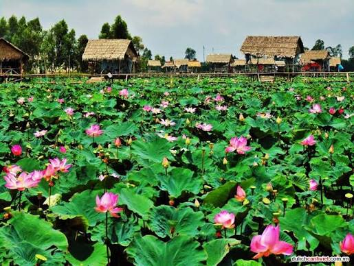
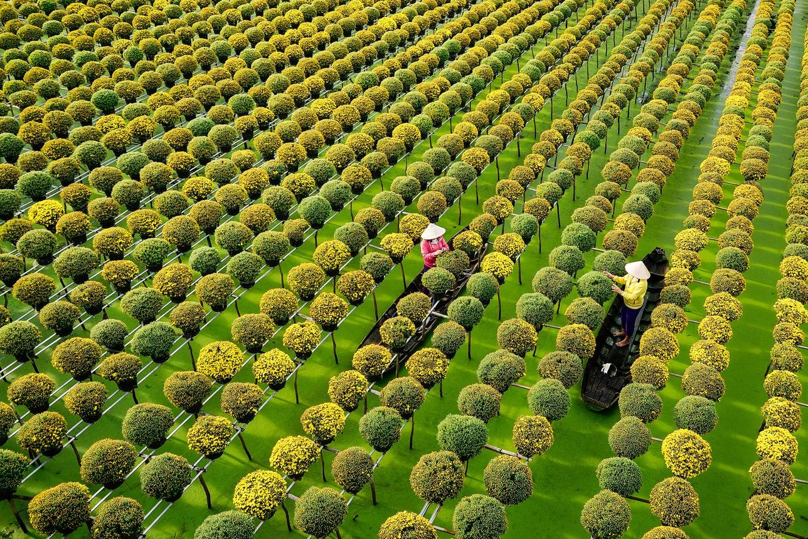
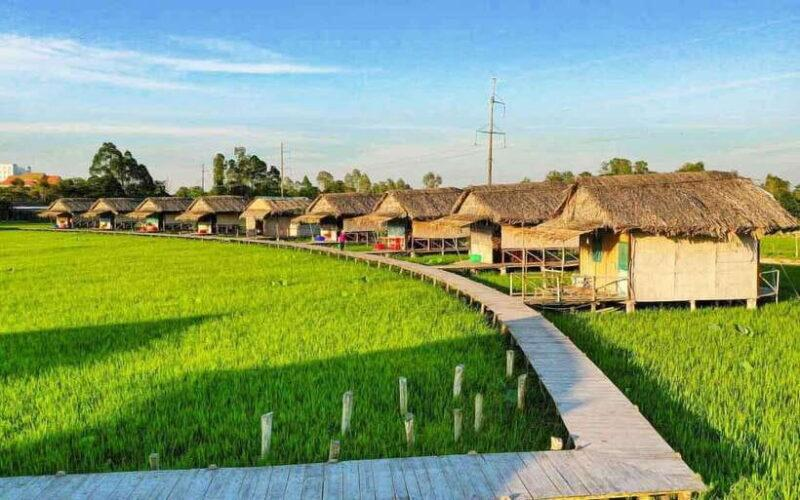
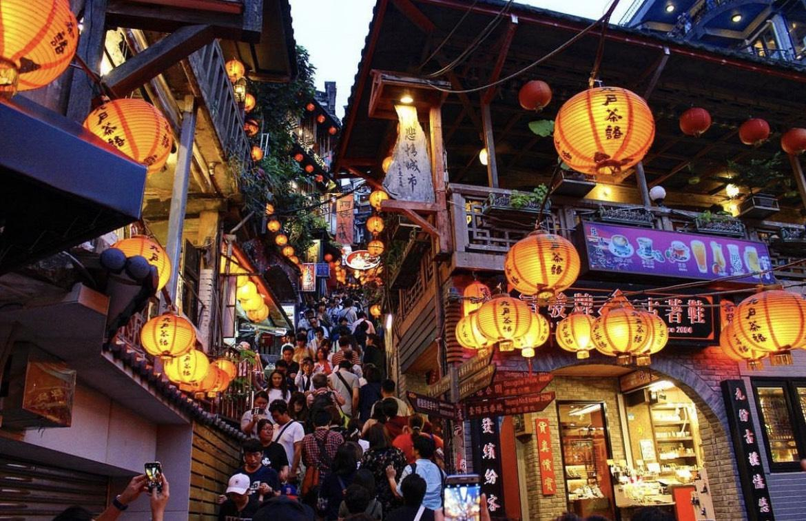
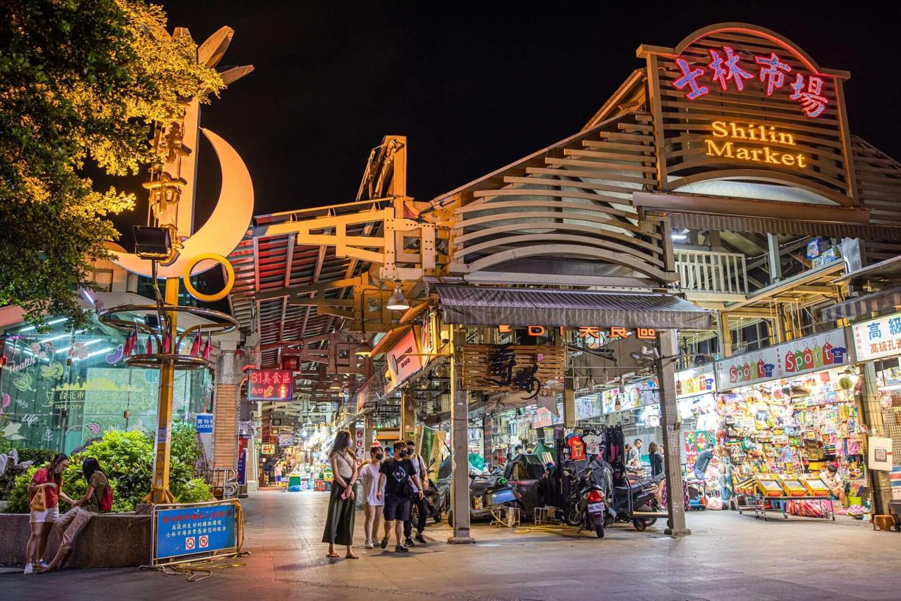
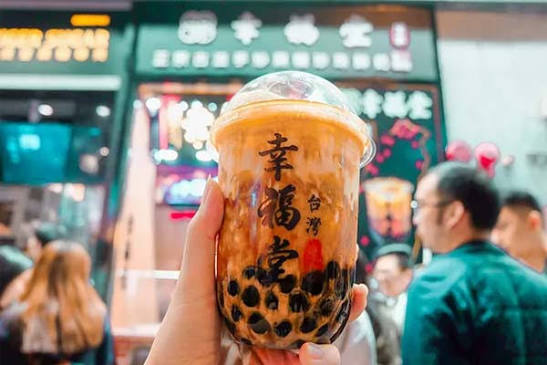
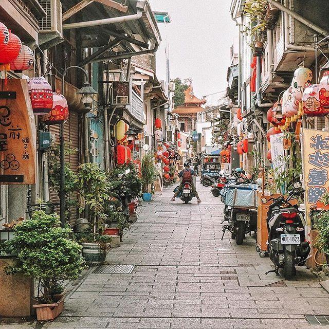
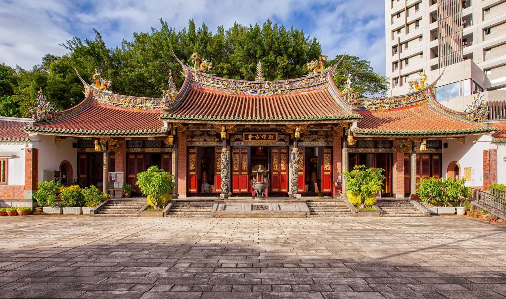

FOOD · 美食
Food
Description
分享我的家鄉越南同塔， 以及在台灣學習、生活與品嚐美食的旅程。
我是楊燕玉，我19歲，越南人，我是南越人，我的家鄉在同塔。
我來台灣6個月了，我是來台灣讀書的，不上課的時候，我常常去夜市，我覺得很開心。
來台灣以後，我覺得天氣最不一樣。
最近有一件讓我很高興的事情是認識很多新朋友。
Years Old
Months in Taiwan
Countries
My hometown, my memories.

同塔是我的家鄉， 這裡以無邊無際的荷花池和 水鄉澤國的平靜生活步調而聞名。
✦ 點擊下面的美食卡片查看介紹


A new place, a new journey.
這是我在台灣學習與體驗新文化的旅程， 包含每天上課的點滴， 以及平時探索街巷的時光。
✦ 點擊下面的美食卡片查看介紹





對我來說，台灣的食物口味比較清淡、 油分也稍微多一點， 但不管是哪個國家的美食， 都各有特色的好吃！
Let's keep in touch.
如果你想和我分享你的故事， 歡迎留下訊息。
Description